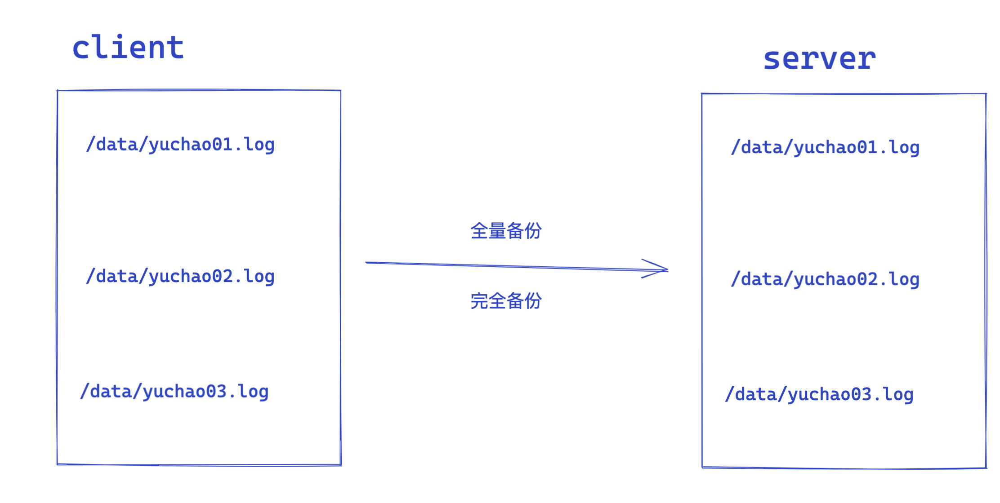
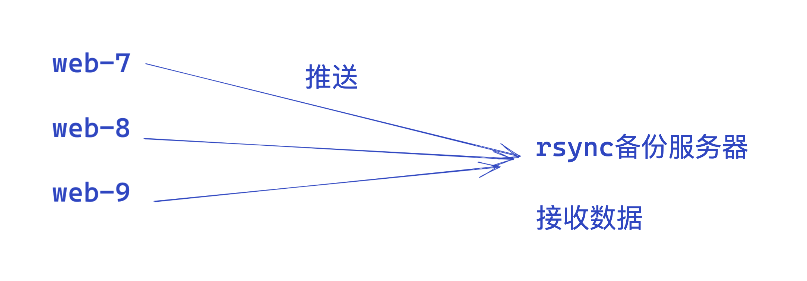
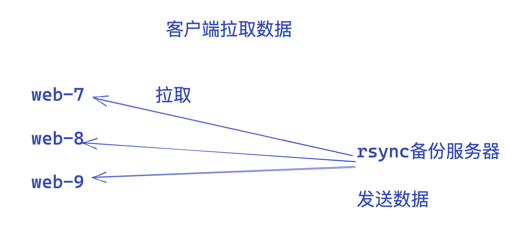
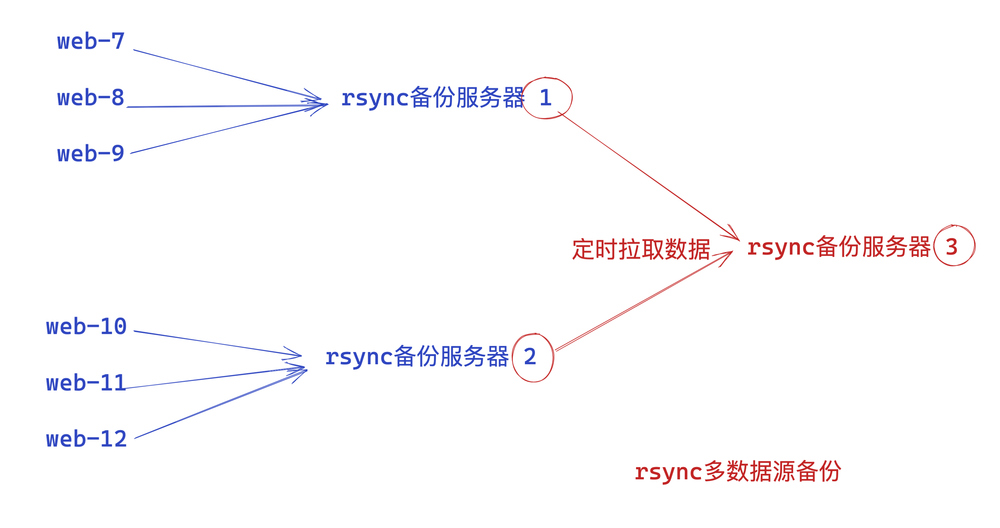
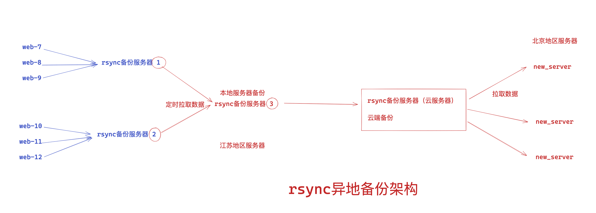

05-备份工具rsync
备份是太常见、且太重要的一个日常工作了。
备份源码、文档、数据库、等等。
类似cp命令拷贝，但是支持服务器之间的网络拷贝，且保证安全性。

学习背景
超哥游戏公司要每天都要对代码备份。

任务需求
1.备份机每天夜里2点要同步开发服务器下的/dev_data/python_code数据，存放到/backup/dev_data/python_code
2.要求记录同步日志，便于记录、处理故障问题。
任务拆解
1.选择合适的备份工具，比如scp（为什么不是cp？）
2.学习rsync工具
3.编写定时任务
关乎知识点
1.rsync学习（新知识点）
2.crontab（复习知识）
一、rsync是什么
Rsync是一款开源的、快速的、多功能的、可实现全量及增量的本地或远程数据同步备份的优秀工具。并且可以不进行改变原有数据的属性信息，实现数据的备份迁移特性。
Rsync软件适用于unix/linux/windows等多种操作系统平台。
Rsync是一个快速和非常通用的文件复制工具。它能本地复制，远程复制，或者远程守护进程方式复制。
它提供了大量的参数来控制其行为的各个方面，并且允许非常灵活的方式来实现文件的传输复制。它以其delta-transfer算法闻名。减少通过网络数据发送数量，利用只发送源文件和目标文件之间的差异信息，从而实现数据的增量同步复制。
Rsync被广泛用于数据备份和镜像，并且作为一种改进后的复制命令用于日常运维。
Rsync具备使本地和远程两台主机之间的数据快速复制，远程备份的功能，Rsync命令本身即可实现异地主机复制数据，功能类似scp又优于scp，scp每次都是全量备份，rsync可以实现增量拷贝（和scp一样都是基于ssh服务传输），Rsync软件还支持配置守护进程，实现异机数据复制。
增量复制是Rsync一特点，优于scp,cp命令。
Rsync实现如下功能
- 本地数据同步复制，效果如cp
- 远程数据同步复制，如scp
- 本地数据删除，如rm
- 远程数据查看，如ls
Rsync软件特性
- 支持拷贝普通文件，特殊文件（link文件，设备文件）
- 支持排除指定文件、目录的同步功能（同步数据时，指定文件不同步）
- 能够保持原有文件所有属性均不变（stat查看的状态）
- 实现增量复制（只复制变化的数据，数据传输效率极高）
- 可以配合ssh、rcp、rsh等方式进行隧道加密文件传输（rsync本身不加密数据）
- 可以通过socket（进行通信文件）传输文件和数据（c/s架构）
- 支持匿名用户模式传输+
rsync默认运行端口
873端口
rsync三种工作模式
1.本地模式，类似cp
2.远程模式，常用，类似scp，不同的机器之间，通过网络拷贝数据
3.后台服务模式，常用，用于实时数据同步，安全性更高
二、rsync备份方式
全量备份

就是完全备份，所有指定的客户端的数据，全部被备份到server01机器上（效率太低，重复性备份文件）
增量备份

rsync自动检测，只会将新增加的文件，备份到server01下，而不会重复备份已存在的数据
备份效率高、
三、备份架构
客户端-推送-数据（上传）

客户端-拉取-数据（下载）

多服务器备份场景

异地备份架构

四、rsync命令所有选项解释
Rsync命令参数详解
在对rsync服务器配置结束以后，下一步就需要在客户端发出rsync命令来实现将服务器端的文件备份到客户端来。rsync是一个功能非常强大的工具，其命令也有很多功能特色选项，我们下面就对它的选项一一进行分析说明。Rsync的命令格式可以为以下六种：
rsync [OPTION]... SRC DEST
rsync [OPTION]... SRC [USER@]HOST:DEST
rsync [OPTION]... [USER@]HOST:SRC DEST
rsync [OPTION]... [USER@]HOST::SRC DEST
rsync [OPTION]... SRC [USER@]HOST::DEST
rsync [OPTION]... rsync://[USER@]HOST[:PORT]/SRC [DEST]
对应于以上六种命令格式，rsync有六种不同的工作模式：
1)拷贝本地文件。当SRC和DES路径信息都不包含有单个冒号":"分隔符时就启动这种工作模式。如：rsync -a /data /backup
2)使用一个远程shell程序(如rsh、ssh)来实现将本地机器的内容拷贝到远程机器。当DST路径地址包含单个冒号":"分隔符时启动该模式。如：rsync -avz *.c foo:src
3)使用一个远程shell程序(如rsh、ssh)来实现将远程机器的内容拷贝到本地机器。当SRC地址路径包含单个冒号":"分隔符时启动该模式。如：rsync -avz foo:src/bar /data
4)从远程rsync服务器中拷贝文件到本地机。当SRC路径信息包含"::"分隔符时启动该模式。如：rsync -av root@172.16.78.192::www /databack
5)从本地机器拷贝文件到远程rsync服务器中。当DST路径信息包含"::"分隔符时启动该模式。如：rsync -av /databack root@172.16.78.192::www
6)列远程机的文件列表。这类似于rsync传输，不过只要在命令中省略掉本地机信息即可。如：rsync -v rsync://172.16.78.192/www
rsync参数的具体解释如下：
-v, --verbose 详细模式输出
-q, --quiet 精简输出模式
-c, --checksum 打开校验开关，强制对文件传输进行校验
-a, --archive 归档模式，表示以递归方式传输文件，并保持所有文件属性，等于-rlptgoD
-r, --recursive 对子目录以递归模式处理
-R, --relative 使用相对路径信息
-b, --backup 创建备份，也就是对于目的已经存在有同样的文件名时，将老的文件重新命名为~filename。可以使用--suffix选项来指定不同的备份文件前缀。
--backup-dir 将备份文件(如~filename)存放在在目录下。
-suffix=SUFFIX 定义备份文件前缀
-u, --update 仅仅进行更新，也就是跳过所有已经存在于DST，并且文件时间晚于要备份的文件。(不覆盖更新的文件)
-l, --links 保留软链结
-L, --copy-links 想对待常规文件一样处理软链结
--copy-unsafe-links 仅仅拷贝指向SRC路径目录树以外的链结
--safe-links 忽略指向SRC路径目录树以外的链结
-H, --hard-links 保留硬链结 -p, --perms 保持文件权限
-o, --owner 保持文件属主信息 -g, --group 保持文件属组信息
-D, --devices 保持设备文件信息 -t, --times 保持文件时间信息
-S, --sparse 对稀疏文件进行特殊处理以节省DST的空间
-n, --dry-run现实哪些文件将被传输
-W, --whole-file 拷贝文件，不进行增量检测
-x, --one-file-system 不要跨越文件系统边界
-B, --block-size=SIZE 检验算法使用的块尺寸，默认是700字节
-e, --rsh=COMMAND 指定使用rsh、ssh方式进行数据同步
--rsync-path=PATH 指定远程服务器上的rsync命令所在路径信息
-C, --cvs-exclude 使用和CVS一样的方法自动忽略文件，用来排除那些不希望传输的文件
--existing 仅仅更新那些已经存在于DST的文件，而不备份那些新创建的文件
--delete 删除那些DST中SRC没有的文件
--delete-excluded 同样删除接收端那些被该选项指定排除的文件
--delete-after 传输结束以后再删除
--ignore-errors 及时出现IO错误也进行删除
--max-delete=NUM 最多删除NUM个文件
--partial 保留那些因故没有完全传输的文件，以是加快随后的再次传输
--force 强制删除目录，即使不为空
--numeric-ids 不将数字的用户和组ID匹配为用户名和组名
--timeout=TIME IP超时时间，单位为秒
-I, --ignore-times 不跳过那些有同样的时间和长度的文件
--size-only 当决定是否要备份文件时，仅仅察看文件大小而不考虑文件时间
--modify-window=NUM 决定文件是否时间相同时使用的时间戳窗口，默认为0
-T --temp-dir=DIR 在DIR中创建临时文件
--compare-dest=DIR 同样比较DIR中的文件来决定是否需要备份
-P 等同于 --partial
--progress 显示备份过程
-z, --compress 对备份的文件在传输时进行压缩处理
--exclude=PATTERN 指定排除不需要传输的文件模式
--include=PATTERN 指定不排除而需要传输的文件模式
--exclude-from=FILE 排除FILE中指定模式的文件
--include-from=FILE 不排除FILE指定模式匹配的文件
--version 打印版本信息
--address 绑定到特定的地址
--config=FILE 指定其他的配置文件，不使用默认的rsyncd.conf文件
--port=PORT 指定其他的rsync服务端口
--blocking-io 对远程shell使用阻塞IO
-stats 给出某些文件的传输状态
--progress 在传输时现实传输过程
--log-format=formAT 指定日志文件格式
--password-file=FILE 从FILE中得到密码
--bwlimit=KBPS 限制I/O带宽，KBytes per second
-h, --help 显示帮助信息
4.1 rsync常用语法
1.安装
yum install rsync -y
2.命令语法，分几个模式
- 本地模式
rsync 参数 源路径 目标路径
- 远程模式，推送方式，把自己的数据推送到另一台机器上（上传）
语法1
rsync 参数 源路径 user@ip:目标路径
语法2
rsync 参数 源路径 user@ip::目标路径
- 远程模式，拉取方式，拉取别人机器的数据到自己的机器上（下载）
rsync 参数 user@ip:源路径 目标路径
rsync 参数 user@ip::源路径目标路径
参数解释
-v 详细模式输出
-a 归档模式，递归的方式传输文件，并保持文件的属性，等同于 -rlptgoD
-r 递归拷贝目录
-l 保留软链接
-p 保留原有权限
-t 保留原有时间（修改）
-g 保留属组权限
-o 保留属主权限
-D 等于--devices --specials 表示支持b,c,s,p类型的文件
-R 保留相对路径
-H 保留硬链接
-A 保留ACL策略
-e 指定要执行的远程shell命令
-E 保留可执行权限
-X 保留扩展属性信息 a属性
比较常用的组合参数
rsync -avzP
-a 保持文件原有属性
-v 显示传输细节情况
-z 对传输数据压缩传输
-P 显示文件传输的进度信息
4.2 本地rsync同步
语法
注意：
1. 本地数据同步的时候，源目录后面的“/”会影响同步的结果
# rsync -av /dir1/ /dir3 //只同步目录下面的文件到指定的路径
# rsync -av /dir1 /dir2 //将当前目录dir1和目录下的所有文件一起同步
2. -R：不管加不加"/"，都会将源数据的绝对路径一起同步
# rsync -avR /dir1/ /dir2/
3. --delete：删除目标目录里多余的文件
# rsync -avR --delete /dir1/ /dir2/
实践
拷贝目录下的数据
[root@client-242 ~]# ls /root/rsync_data/
10.png 1.png 2.png 3.png 4.png 5.png 6.png 7.png 8.png 9.png
[root@client-242 ~]#
[root@client-242 ~]#
[root@client-242 ~]# rsync -av /root/rsync_data/ /tmp/
拷贝整个目录
[root@client-242 ~]# rsync -av /root/rsync_data /tmp/
拷贝数据，清空源目录下的资料
危险命令，慎用--delete参数，会有一个删除动作
也会用于确保两个文件夹目录的文件一致性。
[root@client-242 ~]# rsync -av --delete /root/rsync_data/ /tmp/
[root@client-242 ~]# ls /tmp/
10.png 1.png 2.png 3.png 4.png 5.png 6.png 7.png 8.png 9.png
[root@client-242 ~]#
[root@client-242 ~]# ls /root/rsync_data/
10.png 1.png 2.png 3.png 4.png 5.png 6.png 7.png 8.png 9.png
如果不恰当的用法，这个--delete参数去同步一个空文件夹，则表示删除远程服务器的数据了！
rsync限速
1.生成大文件
dd if=/dev/zero of=/root/2G.txt bs=100M count=20
2.rsync默认传输，吃满带宽，导致服务器其他使用网络资源的程序受阻，因此注意，要夜里，同步数据，别冲突其他人，或者限速
[root@yuchao-linux01 ~]#rsync -avzP --bwlimit=10 2G.txt root@192.168.0.242:/opt/
4.3 远程模式
拉取、下载
文件
参数 -avzP
[root@client-242 ~]# rsync -avzP root@192.168.0.240:/root/chaoge240.log /tmp/
文件夹，注意结尾的斜线，是否添加
传输包括chaoge_data目录本身
[root@client-242 ~]# rsync -avz root@192.168.0.240:/root/chaoge_data /tmp/
仅传输chaoge_data目录下的数据
[root@client-242 ~]# rsync -avz root@192.168.0.240:/root/chaoge_data/ /tmp/
推送、上传
推送文件
[root@client-242 ~]# rsync -avzP my_apple01.log root@192.168.0.240:/tmp/
推送文件夹，一样的语法，注意是否添加结尾的斜线
包括apple目录
[root@client-242 ~]# rsync -avzP apple/ root@192.168.0.240:/tmp/
只有apple下的数据
[root@client-242 ~]# rsync -avzP apple root@192.168.0.240:/tmp/
思考关于密码
rsync远程同步数据时，默认情况下为什么需要密码？如果不想要密码同步怎么实现？
rsync基于ssh协议传输，因此需要认证方式、要么密码、要么密钥对儿。
两台Linux服务器在连接时，默认使用的还是SSH协议。
由于没有做免密登录，所以还是需要输入对方服务器的密码。
如果不想输入密码，可以使用免密登录来实现。
五、rsync服务模式（服务端）
5.1 为什么需要守护进程模式
rsync默认借助ssh协议进行数据同步
1.采用系统默认用户，如root，不安全，可能对系统造成危害，root密码泄露
2.使用普通用户的话，又导致权限不足
3.因此配置守护进程模式，rsync提供了配置文件，有各种功能
默认情况下，rsync只是作为一个命令来进行使用的（ps在查询进程时，找不到对应的服务），但是rsync提供了一种作为系统服务的实现方式。
守护进程传输模式是在客户端和服务端之间进行的数据复制。
服务端需要配置守护进程，在客户端执行命令，实现数据拉取和推送。
rsync守护进程模式
1.通过配置文件设置rsync功能
2.rsync命令变了，通过模块名同步指定的文件夹，而不是一个指定的文件夹路径。
5.2 修改rsync配置文件（rsync服务端）
需要你去 rsync-41 这台机器上去操作
yum install rsync -y
修改配置文件
cat > /etc/rsyncd.conf << 'EOF'
uid = www
gid = www
port = 873
fake super = yes
use chroot = no
max connections = 200
timeout = 600
ignore errors
read only = false
list = false
auth users = rsync_backup
secrets file = /etc/rsync.passwd
log file = /var/log/rsyncd.log
#####################################
[backup]
comment = yuchaoit.cn about rsync
path = /backup
[data]
path = /data
EOF
配置文件解释，注释别写在配置文件里，写笔记上
uid = www # 运行进程的用户
gid = www # 运行进程的用户组
port = 873 # 监听端口
fake super = yes # 无需让 rsync 以 root 身份运行，允许接收文件的完整属性
use chroot = no # 禁锢推送的数据至某个目录, 不允许跳出该目录
max connections = 200 # 最大连接数
timeout = 600 # 超时时间
ignore errors # 忽略错误信息
read only = false # 对备份数据可读写
list = false # 不允许查看模块信息
auth users = rsync_backup # 定义虚拟用户，作为连接认证用户
secrets file = /etc/rsync.passwd # 定义 rsync 服务用户连接认证密码文件路径
[backup] # 定义模块信息
comment = 注释信息 # 模块注释信息
path = /backup # 定义接收备份数据目录
5.3 创建用户、数据目录
[root@yuchao-linux01 ~]#useradd -u 1000 -M -s /sbin/nologin www
[root@yuchao-linux01 ~]#id www
uid=1000(www) gid=1000(www) groups=1000(www)
[root@yuchao-linux01 ~]#mkdir /data
[root@yuchao-linux01 ~]#mkdir /backup
[root@yuchao-linux01 ~]#chown -R www:www /data/
[root@yuchao-linux01 ~]#chown -R www:www /backup/
5.4 创建虚拟用户密码文件与授权
注意和配置文件里的参数对应 /etc/rsyncd.conf
[root@yuchao-linux01 ~]#echo 'rsync_backup:yuchao666' > /etc/rsync.passwd
[root@yuchao-linux01 ~]#cat /etc/rsync.passwd
rsync_backup:yuchao666
授权，务必要降低为600权限，否则rsync会报错
[root@yuchao-linux01 ~]#chmod 600 /etc/rsync.passwd
[root@yuchao-linux01 ~]#ll /etc/rsync.passwd
-rw------- 1 root root 23 Apr 18 20:57 /etc/rsync.passwd
5.5 开机启动，运行rsyncd服务
[root@yuchao-linux01 ~]#systemctl start rsyncd
[root@yuchao-linux01 ~]#systemctl enable rsyncd
Created symlink from /etc/systemd/system/multi-user.target.wants/rsyncd.service to /usr/lib/systemd/system/rsyncd.service.
[root@yuchao-linux01 ~]#
5.6 检查端口
[root@yuchao-linux01 ~]#netstat -tunlp|grep rsync
tcp 0 0 0.0.0.0:873 0.0.0.0:* LISTEN 5974/rsync
tcp6 0 0 :::873 :::* LISTEN 5974/rsync
六、客户端
1.安装rsync
[root@client-242 /opt]#yum install rsync -y
2.创建密码文件，用于和rsyncd服务端认证，降低权限
[root@client-242 /opt]#echo 'yuchao666' > /etc/rsync.pwd
[root@client-242 /opt]#chmod 600 /etc/rsync.pwd
3.方法二，不用文件密码形式，采用环境变量形式，更推荐
[root@client-242 /opt]#export RSYNC_PASSWORD=yuchao666
4.此时可以进行rsync同步数据了
拉取（下载）
密码文件认证方式
注意此时使用的是rsyncd服务端的模块名，指定要 同步的数据目录
以及同步的用户，注意了是rsync_backup用户
拉取backup模块数据
服务端
[root@yuchao-linux01 ~]#ls /backup/
backup1.png backup2.png backup3.png backup4.png backup5.png
客户端拉取数据
拉取文件
[root@client-242 ~]#rsync -avzP --password-file=/etc/rsync.pwd rsync_backup@192.168.0.240::backup /tmp/
拉取data模块数据
服务端数据
[root@yuchao-linux01 ~]#mkdir -p /data/d1/d2/d3
客户端
[root@client-242 ~]#rsync -avzP --password-file=/etc/rsync.pwd rsync_backup@192.168.0.240::data /tmp/
环境变量认证（推荐）
[root@client-242 ~]#export RSYNC_PASSWORD=yuchao666
拉取两个模块下的数据
[root@client-242 ~]#rsync -avzP rsync_backup@192.168.0.240::data /tmp/
[root@client-242 ~]#rsync -avzP rsync_backup@192.168.0.240::backup /tmp/
推送（上传）
密码文件认证
客户端上传
rsync -avzP --password-file=/etc/rsync.pwd /opt/ rsync_backup@192.168.0.240::data
服务端检查
[root@yuchao-linux01 ~]#
[root@yuchao-linux01 ~]#ll /data/2G.txt
-rw-r--r-- 1 www www 97215692 Jan 1 1970 /data/2G.txt
环境变量认证
客户端上传
[root@client-242 ~]#rsync -avzP /opt/ rsync_backup@192.168.0.240::backup
服务端检查
[root@yuchao-linux01 ~]#ll /backup/2G.txt
-rw-r--r-- 1 www www 97215692 Jan 1 1970 /backup/2G.txt
七、其他疑问
1.配置文件里指定的www用户，作用是，当rsyncd运行后，工作进程会以www用户去执行，降低权限
以及接收到的数据，都会被强转为www用户
八、常见rsync错误答疑
注意同步问题
【客户端的错误现象：No route to host】
[root@nfs01 tmp]# rsync -avz /etc/hosts rsync_backup@172.16.1.41::backup
rsync: failed to connect to 172.16.1.41: No route to host (113)
rsync error: error in socket IO (code 10) at clientserver.c(124) [sender=3.0.6]
办法：
1.关闭iptables，或者添加规则
iptables -F
systemctl stop firewalld
2.关闭selinux
[root@nfs01 ~]# setenforce 0 #临时关闭
[root@rsync01 ~]# sed -i 's/enforcing/disabled/g' /etc/selinux/config #重启永久关闭
【注意命令同步的细节】
1.同步整个文件夹
[root@nfs01 ~]# rsync -avzP /etc rsync_backup@192.168.178.139::backup
2.同步文件夹下内容
[root@nfs01 ~]# rsync -avzP /etc/ rsync_backup@192.168.178.139::backup
【ERROR: The remote path must start with a module name not a /】
rsync客户端执行rsync命令错误：
客户端的错误现象：
[root@nfs01 tmp]# rsync -avz /etc/hosts rsync_backup@172.16.1.41::/backup
ERROR: The remote path must start with a module name not a /
rsync error: error starting client-server protocol (code 5) at main.c(1503) [sender=3.0.6]
办法
原因：客户端命令敲错了
rsync命令语法理解错误，::/backup是错误的语法，应该为::backup(rsync模块)
【@ERROR: auth failed on module backup】
客户端的错误现象：
[root@nfs01 tmp]# rsync -avz /etc/hosts rsync_backup@172.16.1.41::backup
Password:
@ERROR: auth failed on module backup
rsync error: error starting client-server protocol (code 5) at main.c(1503) [sender=3.0.6]
办法
1.密码文件错误/etc/rsync.password
2.密码文件参数和实际的密码文件名不一致，检查secrets file = /etc/rsync.password
3.密码文件权限不对 ll /etc/rsync.password 不是600
4.检查免密文件，是否手误
[root@rsync01 ~]# cat /etc/rsync.password
rsync_backup:chaoge
5.rsync客户端的密码文件写错，只需要写入密码即可
[root@nfs01 ~]# cat /etc/rsync.password
chaoge
【@ERROR: Unknown module 'backup'】
[root@nfs01 tmp]# rsync -avz /etc/hosts rsync_backup@172.16.1.41::backup
@ERROR: Unknown module 'backup'
rsync error: error starting client-server protocol (code 5) at main.c(1503) [sender=3.0.6]
办法
异常问题解决：
1、 /etc/rsyncd.conf配置文件模块名称书写错误
2、配置文件中网段限制不对
【Permission denied】
[root@nfs01 tmp]# rsync -avz /etc/hosts rsync_backup@172.16.1.41::backup
Password:
sending incremental file list
hosts
rsync: mkstemp ".hosts.5z3AOA" (in backup) failed: Permission denied (13)
sent 196 bytes received 27 bytes 63.71 bytes/sec
total size is 349 speedup is 1.57
rsync error: some files/attrs were not transferred (see previous errors) (code 23) at main.c(1039) [sender=3.0.6]
办法
1. 共享目录的属主和属组不正确，不是rsync
2. 共享目录的权限不正确，不是755
3.注意防火墙，selinux的关闭
【chdir failed 】
[root@nfs01 tmp]# rsync -avz /etc/hosts rsync_backup@172.16.1.41::backup
Password:
@ERROR: chdir failed
rsync error: error starting client-server protocol (code 5) at main.c(1503) [sender=3.0.6]
办法
异常问题解决：
1. 备份存储目录没有建立
2. 建立的备份存储目录和配置文件定义不一致
【invalid uid rsync】
[root@nfs01 tmp]# rsync -avz /etc/hosts rsync_backup@172.16.1.41::backup
Password:
@ERROR: invalid uid rsync
rsync error: error starting client-server protocol (code 5) at main.c(1503) [sender=3.0.6]
办法
异常问题解决：
rsync服务对应rsync虚拟用户不存在了
客户端有/etc/rsync.password依旧需要输入密码
1.密码文件也得是600权限
2.密码文件名字是否正常
【Connection refused (111)】
[root@yuchao-muban ~]# rsync -avz /etc/hosts rsync_backup@172.16.1.41::backup
rsync: failed to connect to 172.16.1.41: Connection refused (111)
rsync error: error in socket IO (code 10) at clientserver.c(124) [sender=3.0.6]
办法
1.检查防火墙，selinux的关闭
2.检查rsync服务端rsyncd是否开启
Rsync服务端排错思路
- 检查rsync服务端的配置文件路径是否正确：
/etc/rsyncd.conf - 查看配置文件的
host allow,host deny允许的ip网段是否允许客户端访问 - 查看配置文件中的path参数路径是否存在，权限是否正确（和配置文件的UUID参数对应）
- 查看rsync服务是否启动，端口、进程是否存活
- 查看iptables防火墙、selinux是否允许rsync服务通过，或是关闭
- 查看服务端rsync配置文件的密码文件，权限是否600，格式，语法是否正确，且和配置文件的
secrect files参数对应 - 如果是推送数据，要查看配置rsyncd.conf中的用户对该
rsync模块下的文件是否可以读取
Rsync客户端排错
- 查看rsync客户端配置的密码文件权限是否600，密码文件格式是否正确，是否和服务端的密码一致
- 尝试telnet连接rsync服务端的
873端口，检测服务是否可以连接 - 客户端执行命令语法要检查，细心